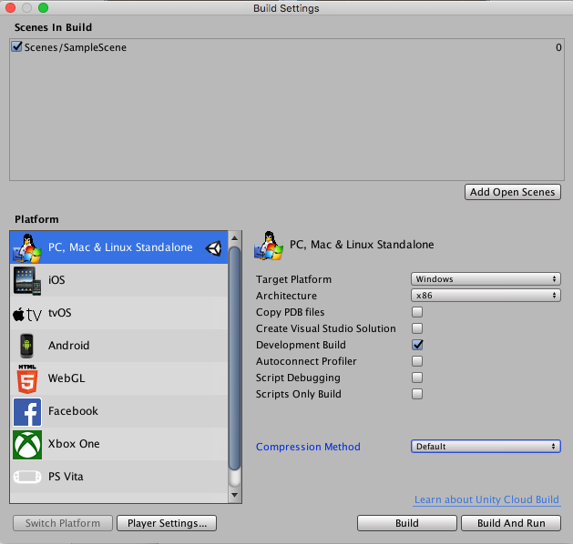
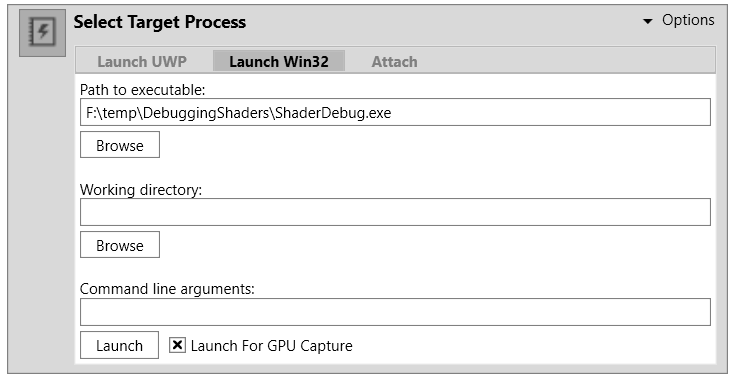
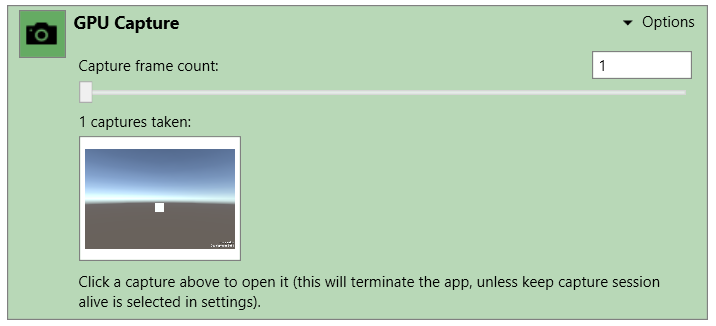
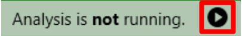
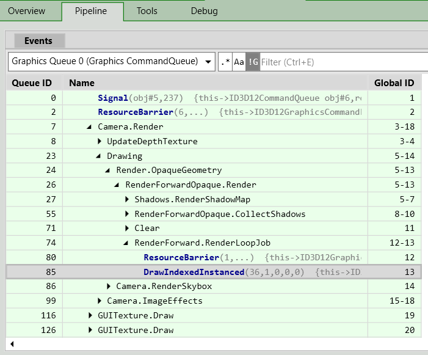
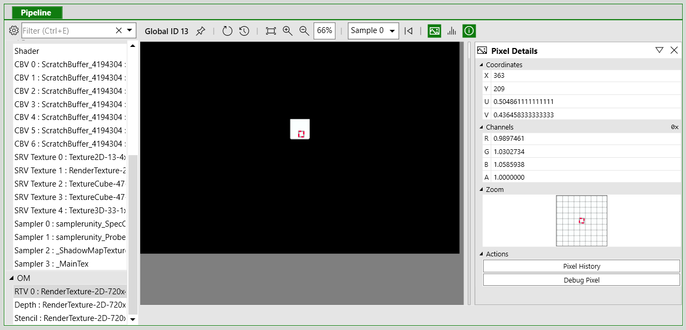
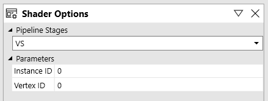
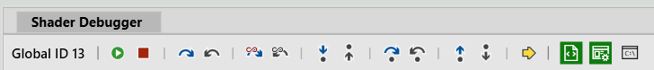

PIX is a performance tuning and debugging tool by Microsoft, for Windows developers. It offers a range of modes for analyzing an application’s performance, and includes the ability to capture frames of DirectX projects from an application for debugging.
Use PIX to investigate issues in Windows 64-bit (x86_64) Standalone or Universal Windows PlatformAn IAP feature that supports Microsoft’s In App Purchase simulator, which allows you to test IAP purchase flows on devices before publishing your application. More info
See in Glossary applications.
To install PIX, download and run the Microsoft PIX installer and follow the instructions.
For more information about PIX, see Microsoft’s PIX Introduction and PIX Documentation.
You should use a built version of your Unity application to capture frames, rather than a version running in the Unity Editor. This is because you need to launch the target application from within PIX to capture GPU frames.
Using a development build adds additional information to PIX, which makes navigating the sceneA Scene contains the environments and menus of your game. Think of each unique Scene file as a unique level. In each Scene, you place your environments, obstacles, and decorations, essentially designing and building your game in pieces. More info
See in Glossary capture easier.
To debug the shader with source code in PIX, you need to insert the following pragma into the shader code: #pragma enable_d3d11_debug_symbols
The following walkthrough uses a basic example to demonstrate the entire process.
Create a new Unity project (see documentation on Getting Started).
In the top menu, go to AssetsAny media or data that can be used in your game or project. An asset may come from a file created outside of Unity, such as a 3D model, an audio file or an image. You can also create some asset types in Unity, such as an Animator Controller, an Audio Mixer or a Render Texture. More info
See in Glossary > Create > ShaderA small script that contains the mathematical calculations and algorithms for calculating the Color of each pixel rendered, based on the lighting input and the Material configuration. More info
See in Glossary > Standard Surface Shader. This creates a new shader file in your Project folder.
Select the shader file, and in the InspectorA Unity window that displays information about the currently selected GameObject, Asset or Project Settings, alowing you to inspect and edit the values. More info
See in Glossary window, click Open. This opens the shader file in your scripting editor. Insert #pragma enable_d3d11_debug_symbols into the shader code, underneath the other #pragma lines.
Create a new Material (menu: Assets > Create > MaterialAn asset that defines how a surface should be rendered, by including references to the Textures it uses, tiling information, Color tints and more. The available options for a Material depend on which Shader the Material is using. More info
See in Glossary).
In the Material’s Inspector window, select the Shader dropdown, go to Custom, and select the shader you just created.
Create a 3D cube GameObject (menu: GameObjectThe fundamental object in Unity scenes, which can represent characters, props, scenery, cameras, waypoints, and more. A GameObject’s functionality is defined by the Components attached to it. More info
See in Glossary > 3D ObjectA 3D GameObject such as a cube, terrain or ragdoll. More info
See in Glossary > Cube).
Assign your new Material to your new GameObject. To do this, drag the Material from the Project window to the 3D cube.
Go to File > Build Settings, and under Platform, select PC, Mac & Linux Standalone. Set the Target Platform to Windows, set the Architecture to x86_64, and click the Development BuildA development build includes debug symbols and enables the Profiler. More info
See in Glossary checkbox.

Click BuildThe process of compiling your project into a format that is ready to run on a specific platform or platforms. More info
See in Glossary.
Launch PIX.
Click on Home, then Connect
Select Computer localhost to use your PC for capturing, and click connect.
In the Select Target Process box, select the Launch Win32 tab and use the Browse button to select your application’s executable file. Note that here, “Win32” means a non-UWP application; your application file must be a 64-bit binary file.
Enable Launch for GPU Capture, then use the Launch button to start the application. 
Use your application as normal until you are ready to capture a frame. To capture a frame, press Print Screen on your keyboard, or click the cameraA component which creates an image of a particular viewpoint in your scene. The output is either drawn to the screen or captured as a texture. More info
See in Glossary icon on the GPU Capture Panel. A thumbnail of the capture appears in the panel. To open the capture, click the thumbnail.

To start analysis on the capture, click the highlighted text or the small Play icon on the menu bar. 
Select the Pipeline tab and use the__ Events__ window to navigate to a draw call you are interested in. 
In the lower half of the Pipeline tab, select a render target from the OM (Output Merger) list to view the output of draw call. Select a pixelThe smallest unit in a computer image. Pixel size depends on your screen resolution. Pixel lighting is calculated at every screen pixel. More info
See in Glossary on the object you want to debug. Note that you can right-click a pixel to view the draw call history, as a way of finding draw calls you are interested in.
Select Debug Pixel on the Pixel Details panel. 
On the debug panel, use the Shader Options to select which shader stage to debug. 
Use the toolbarA row of buttons and basic controls at the top of the Unity Editor that allows you to interact with the Editor in various ways (e.g. scaling, translation). More info
See in Glossary or keyboard shortcuts to step through the code.

For more information on debugging shaders with PIX, see Microsoft’s video series PIX on Windows, particularly Part 5 - Debug Tab.
For more information on GPU capture in PIX, see Microsoft’s documentation on GPU Captures.
Did you find this page useful? Please give it a rating: